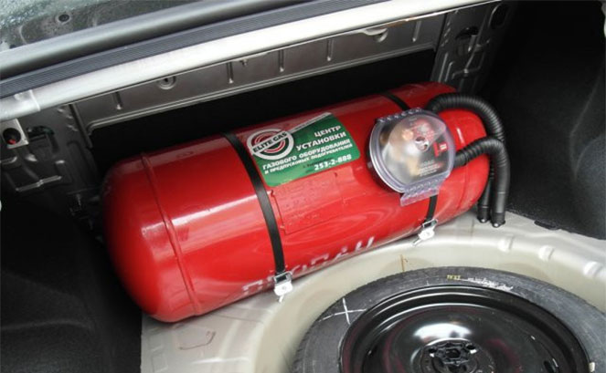

Многие из автомобилистов, кто уже совершил переход на газовое оборудование для автомобиля, смогли по достоинству оценить те плюсы, которые предоставляет газ на авто по сравнению с таким топливом как традиционный бензин.
Такое топливо, как газ на авто - это группа газов, подобных пропану и метану.
Применение метану находится, как правило, в качестве топлива в грузовых автомобилях, поскольку у этого газа достаточно низкая плотность (примерно в тысячу раз меньше плотности у бензина). Поэтому, для его длительного хранения, плотность метана повышается путём его сжатия до двухсот-двухсот пятидесяти атмосфер и газ на авто закачивается в специальные баллоны с повышенной прочностью и штатной нагрузкой до двухсот пятидесяти атмосфер.
Такой же газ на авто, как пропан, применяется без ограничений в качестве топлива для моторов легковых автомобилей. Правда, при этом происходит увеличение общего веса автомобиля, но не настолько, чтобы стать в дальнейшем существенной проблемой.
Газ на авто - это газовая смесь, состоящая из пропана и бутана, которая обычно носит название пропан. Добыча этого газа осуществляется из конденсата попутных нефтяных газов и, конечно же, самой нефти. Газ на авто является сжиженным газом и заправка им автомобилей происходит практически тем же способом, что и для бензина. Для обеспечения газу сжиженного состояния, хранение и перевозка пропана-бутана осуществляется в специальных баллонах, при его сжатии до шестнадцати атмосфер.
Сейчас газ на авто приобретает всё большее признание и популярность в качестве топлива для моторов автомобилей. Причина этого явления видна невооружённым глазом: газ на авто обладает несомненными преимуществами перед используемым бензином. Востребованные качества пропана в процессе эксплуатации показывают гораздо лучшие результаты, чем традиционно используемое топливо. Благодаря особым свойствам пропана, хранение этого газа возможно в ёмкостях небольших объёмов.
Но при этом необходимо соблюдать определённые меры предосторожности:
-во избежание разрушения баллона, заполнение газом его объёма производится не полностью. В качестве предохранительной меры оставляется паровая подушка, по своему объёму соответствующая десяти процентам от общего объёма баллона.
-поскольку газ на авто является газовой смесью из двух разных газов - пропана и бутана, то следует учитывать, что процесс газообразования у них происходит при различных температурах кипения. Например, переход бутана в газообразное состояние из жидкого состояния происходит при достижении им температуры минус сорок три градуса по Цельсию, аналогично у бутана переход происходит при достижении им температуры ноль градусов по Цельсию. Поэтому оптимальное, для лучшего газообразования, соотношение газовой смеси будет варьироваться для различных времён года. Если газ на авто используется в зимнее время года, то преимущество в соотношении газовой смеси должно быть у пропана.
Газ на авто, по соотношению стоимости бензина и газа, позволяет произвести значительную экономию средств, поскольку это соотношение определяется, как десять к шести в пользу газа.
Минусом, который проявляется при использовании газового топлива, можно назвать десятипроцентное снижение мощности мотора. Но, поскольку при этом наблюдается всего лишь четырёхпроцентное снижение максимальной скорости, этот минус можно не принимать во внимание.
Еще немного о газе для автомобиля ( ГБО - газобалонное оборудование )...